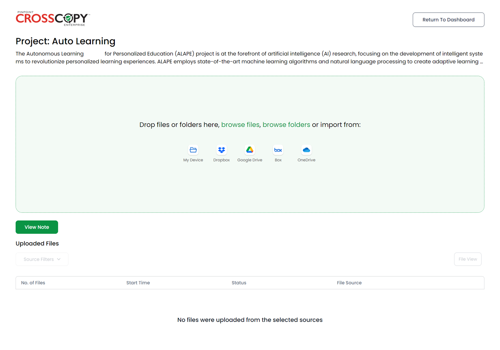
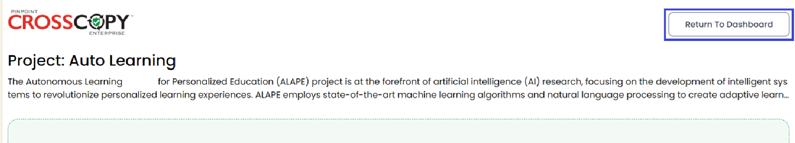
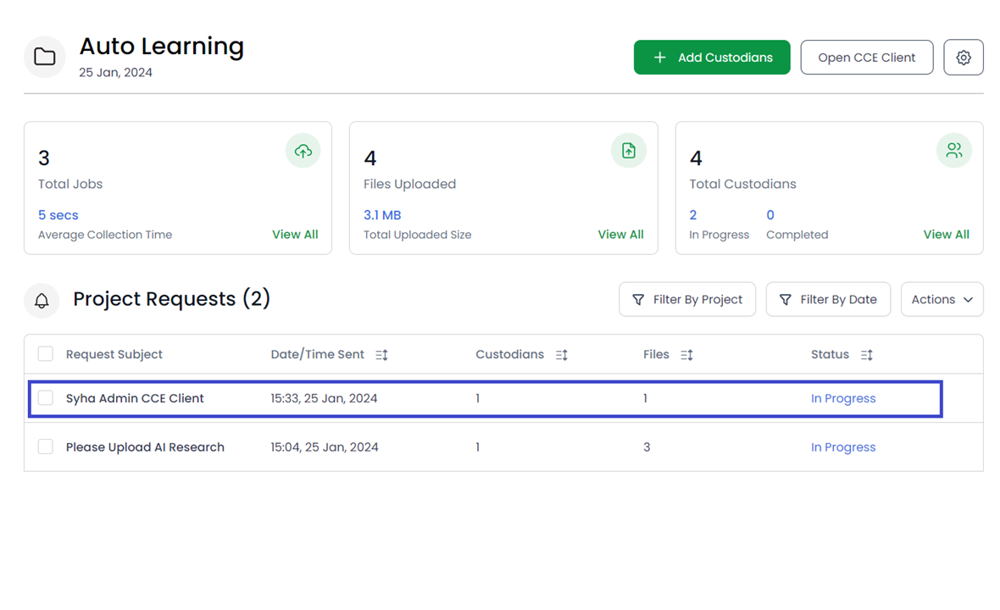

As an admin, you can upload files to your project as a custodian as well. To do this, open the desired project, and click on the Open CCE Client button.

This will open the view of the custodian:
You can drag and drop or upload files, and add notes like a custodian here. Once you are done, you can click on the Return to Dashboard button to go back to your admin view.
You will now also see a request created in your name.
You can carry out all the tasks related to this request, just as you would with any other.